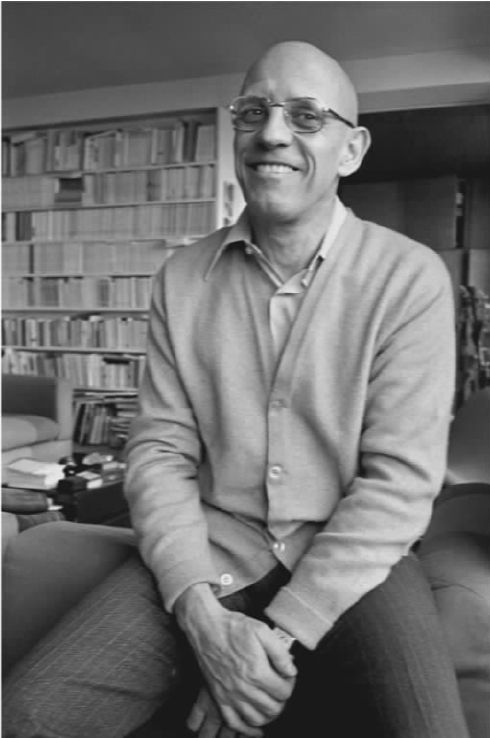

福柯是一个同性恋者，现代性史的写作对他来说一定是倾注了特殊的个人感情的一件事。福柯的传记作家透露，福柯在青少年时代因性取向遭了不少罪，因为20世纪40和50年代的法国社会大多以此为耻或为此感到愤怒。即使巴黎高等师范学院的总体氛围比较宽容，但对同性恋也不完全友善。福柯明确表示，他在瑞典工作的原因之一是希望找到一个对性的态度更加开放的环境，虽然这一愿望没有完全实现。尽管福柯性生活的具体情况仍旧笼统而不可知（难道不应该如此吗？），但是我们有足够理由认为，作为同性恋被边缘化的经历是他生活的一个重要组成部分。另一方面，他也像别人一样不愿接受“同性恋”的身份。从记录在册的资料来看，他极少以“同性恋者”的身份写作或讲话，而当他这样做的时候，例如在同性恋出版物对他的几次采访中，他对同性恋积极分子运动更多的是一个同情的旁观者，而不是投身其中的参与者。对他最具吸引力的是他眼中的同性恋者近来对新型的人类社区和身份的探索。
不管怎么说，同性恋只是福柯讨论性史时的众多话题之一。除了有一卷名为“性变态者”之外，他还有数卷讨论儿童、妇女和已婚夫妇。不仅如此，他对该项目的一个总述性的导论（唯一真正得以发表的那一卷）表明，正如在《规训与惩罚》中那样，他的研究将从边缘化群体扩展开来从而包括现代社会的任何一员。事实上，从一开始就很明显，福柯对性经验的研究正在拓展一个超越权力关系的维度。它正在成为一种历史，不仅是政治意义上而且也是心理和伦理意义上的主体塑造的历史。
然而，起点依旧是福柯对于现代权力的看法，这在《性经验史》的第一卷中得到明确的展现。因此，福柯最初对性经验的处理方式大体上是《规训与惩罚》中所用的系谱学研究方法的直接延伸。这一方法被用于研究多种关于性经验的现代知识体系（“性科学”），目的就是要显示这些体系与现代社会权力结构的紧密关联。福柯这部分讨论的重心在于他所称的“压制性假设”。这是一个寻常的假设，认为现代社会对于性的态度（始自18世纪，在维多利亚时代达到顶峰，至今仍具有重要影响力）主要是负面的；认为除了在一夫一妻制的狭窄空间内的性经验之外，其他性经验都遭到反对，发不出声音，并遭到最大程度的抹杀。
福柯并不否认压制的事实。维多利亚时代的确曾给女人束胸，审查文学，并开展声势浩大的反手淫运动。但他否认现代权力主要通过压制来施行，否认反对压制是抵制现代权力的有效手段。相反，他认为现代权力通过发明新的话语创造出新的性经验形式。例如，尽管同性性关系在整个人类史中都存在着，但同性恋者作为一个有其自身心理、生理甚至基因特征的独特群体，却是现代性科学的权力/知识体系创造出来的。
福柯指出，性压制是一个表面现象，远为重要的是17世纪以来性话题的“真正的话语爆炸”（《性经验史》第一卷：《概述》，第17页），尤其是反改革派在忏悔问题上的立法。忏悔者被要求以一种前所未闻的全面和独特的方式来“审察自己的良心”。仅仅说“我和我妻子以外的女人睡觉了”，这还不够；你得说睡过多少次，采取了什么样的性行为，这个女人自己是否已婚。仅仅报告外在的行为还不够。思想和欲望也同等重要，即使没有实施出来。但这种情况下光说“我想和我妻子以外的女人睡觉”也不够。你还得确定你是否老想着这事，是不是因此觉得愉悦——而不是立即打消了这个想法；如果你有此想法，是无意为之，还是“得到意志的完全批准”？所有这些因素都是告解神父需要考虑的，从而决定负罪的程度（例如，重罪还是轻罪）、确定适当的惩罚措施并提出改进道德的建议。对忏悔者来说，结果是对自身的认识越来越深、越来越准确，这是“自我阐释学”的成果，最大程度地展示了他们内心的性本能。然而福柯暗示，这种本性与其说是自我发现的，不如说是由规定的自我审察构建出来的。我的性身份取决于我被规定在忏悔中使用什么样的范畴。
现代性经验史的大部分内容，是由这些自我认知的宗教手段进行世俗化调整和扩张构成的。忏悔的对象可能不再是神父，但肯定有个医生、心理咨询师、挚友，或者至少是其本人。确定一个人性本能的可能性的范畴不是自选的，而是新兴的现代性科学“专家”权威认定的：弗洛伊德学派、克拉夫特——埃宾学派、哈夫洛克·埃利斯学派、玛格丽特·米德学派。这些专家把实际上只是行为的新社会规范的东西当做有关人性的新发现呈现出来。
当然，作为一种社会建构的性经验与作为生理真实的性别之间还是存在着差别。福柯并不否认存在着（比如）关于人类繁殖的不可否认的生理学事实。但他坚称，一旦我们从纯粹的生理学走向心理学、人类学等领域中那些具有不可避免的阐释性和规范性的范畴时，这种差别就不存在了。比方说，俄狄浦斯情结与资本主义有关家庭的意义假设与价值假设联系在一起；它不只是和受孕的生理过程相类似的事实。甚至于看似简单的生理事实，例如，男性与女性之间的差别，也可能具有规范性的社会意义。何秋兰·巴宾的例子即是一个明证。何秋兰·巴宾是19世纪的一个两性人，被当做女性抚养长大，但在二十多岁时接受了医生的仔细检查并被认定为事实上的男性，从此强迫她以男性的身份生活。福柯公开了巴宾三十岁自杀前所写的心酸的回忆录。
尽管福柯对压制性假设持批判态度，他却能够写出一部与监狱史旗鼓相当的性经验史。现代性科学规定了与权力/知识具有相似角色的性功能障碍的范畴（同性恋、女色情狂、恋物癖等），正如现代犯罪学定义了社会功能障碍的范畴（青少年犯罪、盗窃癖、吸毒、连环杀人等），这些范畴同时也是认识和控制相关“对象”的依据。福柯援引了茹伊的案例，茹伊是19世纪法国的一个略有智障的农夫，偶尔引诱村庄里的女孩和他进行福柯所说的“无害的拥抱”。无疑这样的事情在法国村庄里上演了数个世纪，但有人向政府当局告发了茹伊，当局于是让茹伊尝到了新兴的性科学的厉害。经过详细的法律和医学审查后，他被确认无罪，但仍旧被关进医院，整个后半辈子都成为了“医学和知识研究的纯粹对象”（《性经验史》第一卷：《概述》，第32页）。我们现在很多人都会为福柯对在我们看来可能算性骚扰的行为的漠视感到吃惊，但福柯无疑也会把我们的反应本身看做现代权力/知识体系在发挥作用的体现。
福柯计划的六卷《性经验史》中有三卷讨论特定的边缘群体：作为抑制手淫运动对象的儿童（《儿童的十字军东征》）；作为由性导致的歇斯底里症患者的女性（《歇斯底里的女性》）；被视为性行为“不正常”的同性恋及其他群体（《性变态者》）。所有这些人，正如《规训与惩罚》中的罪犯一样，都是由层级监视与规范性评判所建构和控制的。不仅如此，正如犯罪行为的例子所显示的，我们没有现实的可能性去消除甚或大幅减少目标行为，因此权力机制的实际功能只在于控制某些部分的人口。福柯计划中的第四卷是《马尔萨斯式的夫妇》，讨论的主题将是设计用来限制人口并提高其质量的多种权力结构。这也和在《规训与惩罚》中一样，很容易被视做规训力量向非边缘群体的扩展与延伸。
在《性经验史》导论的结尾章节，福柯似乎超越了性经验本身，提出了生物权力的概念，这一概念涵盖了所有针对作为在世生物的我们的现代权力形式，把我们作为不仅是正常性行为而且是正常生物行为规范的作用对象。生物权力关注的是“管理生命的工作”，是一个在两个层面运作的过程。在个体的层面，存在着“人类肉身的解剖学政治”；在社会群体层面，存在着“人口的生物政治学”（《性经验史》第一卷：《概述》，第139页）。第一层面是对《临床医学的诞生》中医学主要的认识论疗法的隐性补充，以此彰显了界定健康个体的医学规范的政治意义（广义，包括社会和经济等方面）。于是（比如）现代医学对于肥胖的观念与“胖人”这个边缘社会群体相对应，而现代药物治疗疾病的技术与药品行业的经济学错综复杂地联系在一起。第二个层次关注的是把整个国家的人口作为一种必须加以保护、监控和改良的资源。因此，资本主义要求全体性的医疗和教育来保证充足的劳动力资源；种族主义的意识形态呼吁采取优生措施保护人口“储备”的纯洁性；军事谋略家提出“总体战”的概念，不仅指军队之间的战斗，还指全体人口之间的战争。
于是，我们看到，福柯的现代性经验史的研究计划从一开始就已扩展为现代生物权力史。20世纪70年代末，他开始讨论此类历史主题。举例来说，福柯重新讨论了医学史和精神病学史的问题，但现在的分析视角是他新的权力观念。同时，他开始研究他所谓的“管理的艺术”，即从中世纪田园模式发展而来的、统治者关爱所辖人民的艺术。
然而，更为重要的是这一计划的另一发展方向，福柯后来把它称为“主体的历史”。这一趋势早在《规训与惩罚》中就已浮现：福柯在书中间或提到，规训所控制的对象如何主动将控制他们的规范内化从而成为自身行为的监视者。在性经验方面，这一现象占据了中心位置，因为个体应能领会自己作为一种性存在的本性，并且根据这种自我认知改变自己的生活。因此，我们不仅仅是那些对我们进行过专门了解的规训活动的对象 ，也同时作为对我们自身的知识进行自我审查与自我建构的主体 而受到控制。
这一新视角让福柯能够质疑现代社会性解放的理想。我通过自我审查发现了内心深处的性本能，通过克服各种焦虑和恐惧来表现这一本性。但我真正解放自己了吗？或者，我只是按照一套新标准重新塑造了自己的生活？难道乱交不也像一夫一妻制那样是一个高标准的理想？乱交要求在性生活方面具有冒险精神，这难道不会如传教士的职业要求其一本正经一样成为一种负担？杂志、关于自慰的书籍、指导我们过解放了的性生活的手册，这些都似乎要引起我们内心对于自身性魅力与性能力的不安与恐惧，正如布道和训诫试图让我们的祖父辈对纵欲的危险感到不安与恐惧一样。更为重要的是，我对性解放要求的接受难道比我们祖父辈对传统道德要求的认可更能反映一个人的“本来面目”？福柯暗示，在上述两种情况下，接受与认可可能只是外在规范的内化。福柯说，我们无休止地争论性的问题，这颇具讽刺意味，因为我们认为这与自我解放有关（《性经验史》第一卷：《概述》，第159页）。

图13 福柯在巴黎的寓所，1978年
更重要的是，福柯的新视角使他具有了这样的观点：他对性经验的研究的确是试图理解个体成为主体这一过程中的一个环节。福柯得出了这样的结论：他所写的与其说是性经验史，不如说是主体的历史。这一转变源于他发现了性经验是我们作为自我或主体的身份的内在组成部分。如果我说我是同性恋或者我对艾伯丁着迷，就是在说我以主体性的具体性表现了关于我自身的十分核心的东西。此处，福柯似乎回到了个体自觉的立场。虽然他在早期选择观念哲学而非经验哲学时放弃了这一点，但我想说他从没有真正远离这一立场，只不过是拒绝了那种忽略主体根本的历史特性而对其所作的先验性解读。无论如何，福柯现在觉得能够也有必要阐明我们成为主体的历史进程。问题不在于自觉如何从不自觉中产生，而在于一个自觉的存在怎样获得了某一特定身份，换言之，怎样逐渐认为自己受一套特定的伦理规范的指导，这些规范赋予其存在以特定的意义和目的。
在《性经验史》中，福柯开始审视对一种伦理自我的现代自觉通过基督教的自我阐释学的世俗化过程诞生的方式（正如在我们前文讨论过的忏悔仪式中）。他最初的计划是在另一部关于中世纪基督教性经验观的独立篇章中充分讨论这一主题，他把该篇称为《肉身的忏悔》 [1] 。（这原本将成为性经验史中的第二卷，后面还有四卷，分别讨论儿童、妇女、性变态者和夫妇。）福柯说他完成了这一卷的初稿，但对他所写的内容不满意，于是暂搁一边。尽管这篇稿子显然还存在着，但从未发表出来（福柯的家人坚持遵从他的严格指令：“死后不再发表任何作品”）。这一手稿在巴黎的福柯档案中心也找不到；极少有人见过这份稿子，因而对其内容也没有任何具体描述。（见过这份手稿的人说它并不真正是一份完整稿，跟福柯所言相左。）
正如福柯对这一研究计划所作的深度思考一样，不管怎样，他都认定他的讨论要从古希腊和古罗马——而不是中世纪——对性和自我的观念开始。他曾得出结论说，要恰当地理解基督教对自我的阐释学认识，他得从古代观念中追踪其根源和变异。他开始重新拾起在学校学过的希腊文和拉丁文，与他在法兰西学院的两个朋友兼同事有过多次的讨论，此二人即罗马历史学家保罗·贝内和古代哲学史家皮埃尔·哈多特。这一重大的方向性调整，加上身体欠佳（后被证实是艾滋病，福柯也因此而死），严重影响了该项目的进度。直到1984年临死之前，福柯才出版了有关古代世界的两册书：《快感的运用》讨论了公元前4世纪的希腊文本，《自我的关怀》探讨了公元前1世纪到公元1世纪之间的希腊和罗马文本。
尽管这两册书被命名为福柯《性经验史》第二卷和第三卷，但把我们曾经讨论过的第一卷看做其导读则没有多少道理。粗略地说，第一卷介绍的研究计划是把现代性经验作为生物权力的例子加以研究的项目：生物学（广义的）知识充当从社会——政治层面控制个体和群体的基础。这是福柯从未能付诸实施的一个计划，尽管有些研究内容分散地出现在《性经验史》第一卷之前和之后的作品中。第二卷、第三卷是一项研究的组成部分，这项研究把古代性经验作为自我的伦理建构的例子。尽管都讨论了基督教的自我阐释学这一主题，这与前期对生物权力的研究却不甚相关。倘若福柯没有把这两本书作为他最初性经验史的后续研究，那么就不会如此具有误导性了。他可能预见到了某一领域更宽的项目，既从生物权力又从自我建构来探讨性经验。但在弥留之际他似乎偏离了性经验史。他的新方向，正如我们将看到的，把主体的建构与他后来所谓的“真理游戏”而不是性经验联系起来。